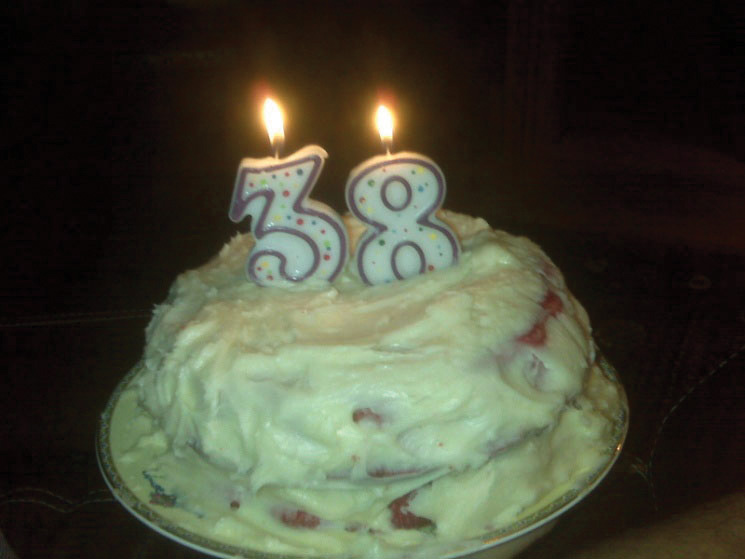

Measurement is important. Recognizing that fact, and respecting it, will be of great benefit to you—both in research methods and in other areas of life as well. If, for example, you have ever baked a cake, you know well the importance of measurement. As someone who much prefers rebelling against precise rules over following them, I once learned the hard way that measurement matters. A couple of years ago I attempted to bake my husband a birthday cake without the help of any measuring utensils. I’d baked before, I reasoned, and I had a pretty good sense of the difference between a cup and a tablespoon. How hard could it be? As it turns out, it’s not easy guesstimating precise measures. That cake was the lumpiest, most lopsided cake I’ve ever seen. And it tasted kind of like Play-Doh. Figure 6.1 depicts the monstrosity I created, all because I did not respect the value of measurement.
Figure 6.1
Measurement is important in baking and in research.
Just as measurement is critical to successful baking, it is as important to successfully pulling off a social scientific research project. In sociology, when we use the term measurementThe process by which we describe and ascribe meaning to the key facts, concepts, or phenomena that we are investigating. we mean the process by which we describe and ascribe meaning to the key facts, concepts, or other phenomena that we are investigating. At its core, measurement is about defining one’s terms in as clear and precise a way as possible. Of course, measurement in social science isn’t quite as simple as using some predetermined or universally agreed-on tool, such as a measuring cup or spoon, but there are some basic tenants on which most social scientists agree when it comes to measurement. We’ll explore those as well as some of the ways that measurement might vary depending on your unique approach to the study of your topic.
The question of what social scientists measure can be answered by asking oneself what social scientists study. Think about the topics you’ve learned about in other sociology classes you’ve taken or the topics you’ve considered investigating yourself. Or think about the many examples of research you’ve read about in this text. In Chapter 2 "Linking Methods With Theory" we learned about Melissa Milkie and Catharine Warner’s study (2011)Milkie, M. A., & Warner, C. H. (2011). Classroom learning environments and the mental health of first grade children. Journal of Health and Social Behavior, 52, 4–22. of first graders’ mental health. In order to conduct that study, Milkie and Warner needed to have some idea about how they were going to measure mental health. What does mental health mean, exactly? And how do we know when we’re observing someone whose mental health is good and when we see someone whose mental health is compromised? Understanding how measurement works in research methods helps us answer these sorts of questions.
As you might have guessed, social scientists will measure just about anything that they have an interest in investigating. For example, those who are interested in learning something about the correlation between social class and levels of happiness must develop some way to measure both social class and happiness. Those who wish to understand how well immigrants cope in their new locations must measure immigrant status and coping. Those who wish to understand how a person’s gender shapes their workplace experiences must measure gender and workplace experiences. You get the idea. Social scientists can and do measure just about anything you can imagine observing or wanting to study. Of course, some things are easier to observe, or measure, than others, and the things we might wish to measure don’t necessarily all fall into the same category of measureables.
In 1964, philosopher Abraham Kaplan (1964)Kaplan, A. (1964). The conduct of inquiry: Methodology for behavioral science. San Francisco, CA: Chandler Publishing Company. wrote what has since become a classic work in research methodology, The Conduct of Inquiry (Babbie, 2010).Earl Babbie offers a more detailed discussion of Kaplan’s work in his text. You can read it in Chapter 5 "Research Design" of the following: Babbie, E. (2010). The practice of social research (12th ed.). Belmont, CA: Wadsworth. In his text, Kaplan describes different categories of things that behavioral scientists observe. One of those categories, which Kaplan called “observational terms,” is probably the simplest to measure in social science. Observational termsThings that we can see with the naked eye simply by looking at them. are the sorts of things that we can see with the naked eye simply by looking at them. They are terms that “lend themselves to easy and confident verification” (1964, p. 54).Kaplan, A. (1964). The conduct of inquiry: Methodology for behavioral science. San Francisco, CA: Chandler Publishing Company, p. 54. If, for example, we wanted to know how the conditions of playgrounds differ across different neighborhoods, we could directly observe the variety, amount, and condition of equipment at various playgrounds.
Indirect observablesThings that we cannot see with the naked eye but that require some more complex assessment., on the other hand, are less straightforward to assess. They are “terms whose application calls for relatively more subtle, complex, or indirect observations, in which inferences play an acknowledged part. Such inferences concern presumed connections, usually causal, between what is directly observed and what the term signifies” (1964, p. 55).Kaplan, A. (1964). The conduct of inquiry: Methodology for behavioral science. San Francisco, CA: Chandler Publishing Company, p. 55. If we conducted a study for which we wished to know a person’s income, we’d probably have to ask them their income, perhaps in an interview or a survey. Thus we have observed income, even if it has only been observed indirectly. Birthplace might be another indirect observable. We can ask study participants where they were born, but chances are good we won’t have directly observed any of those people being born in the locations they report.
Sometimes the measures that we are interested in are more complex and more abstract than observational terms or indirect observables. Think about some of the concepts you’ve learned about in other sociology classes—ethnocentrism, for example. What is ethnocentrism? Well, you might know from your intro to sociology class that it has something to do with the way a person judges another’s culture. But how would you measure it? Here’s another construct: bureaucracy. We know this term has something to do with organizations and how they operate, but measuring such a construct is trickier than measuring, say, a person’s income. In both cases, ethnocentrism and bureaucracy, these theoretical notions represent ideas whose meaning we have come to agree on. Though we may not be able to observe these abstractions directly, we can observe the confluence of things that they are made up of. Kaplan referred to these more abstract things that behavioral scientists measure as constructsAbstractions that cannot be observed directly but that can be defined based on that which is observable.. Constructs are “not observational either directly or indirectly” (1964, p. 55),Kaplan, A. (1964). The conduct of inquiry: Methodology for behavioral science. San Francisco, CA: Chandler Publishing Company, p. 55. but they can be defined based on observables.
Thus far we have learned that social scientists measure what Abraham Kaplan called observational terms, indirect observables, and constructs. These terms refer to the different sorts of things that social scientists may be interested in measuring. But how do social scientists measure these things? That is the next question we’ll tackle.
Measurement in social science is a process. It occurs at multiple stages of a research project: in the planning stages, in the data collection stage, and sometimes even in the analysis stage. Recall that previously we defined measurement as the process by which we describe and ascribe meaning to the key facts, concepts, or other phenomena that we are investigating. Once we’ve identified a research question, we begin to think about what some of the key ideas are that we hope to learn from our project. In describing those key ideas, we begin the measurement process.
Let’s say that our research question is the following: How do new college students cope with the adjustment to college? In order to answer this question, we’ll need to some idea about what coping means. We may come up with an idea about what coping means early in the research process, as we begin to think about what to look for (or observe) in our data-collection phase. Once we’ve collected data on coping, we also have to decide how to report on the topic. Perhaps, for example, there are different types or dimensions of coping, some of which lead to more successful adjustment than others. However we decide to proceed, and whatever we decide to report, the point is that measurement is important at each of these phases.
As the preceding paragraph demonstrates, measurement is a process in part because it occurs at multiple stages of conducting research. We could also think of measurement as a process because of the fact that measurement in itself involves multiple stages. From identifying one’s key terms to defining them to figuring out how to observe them and how to know if our observations are any good, there are multiple steps involved in the measurement process. An additional step in the measurement process involves deciding what elements one’s measures contain. A measure’s elements might be very straightforward and clear, particularly if they are directly observable. Other measures are more complex and might require the researcher to account for different themes or types. These sorts of complexities require paying careful attention to a concept’s level of measurement and its dimensions. We’ll explore these complexities in greater depth at the end of this chapter, but first let’s look more closely at the early steps involved in the measurement process.